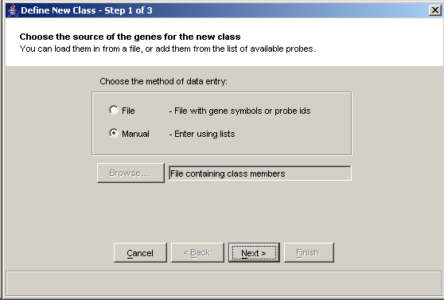
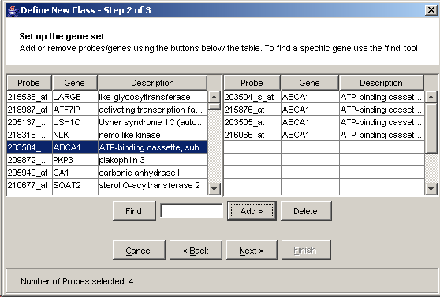
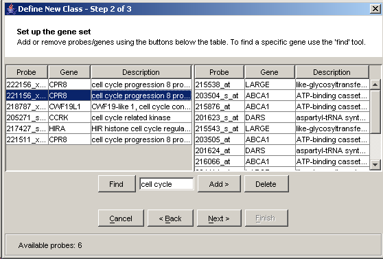
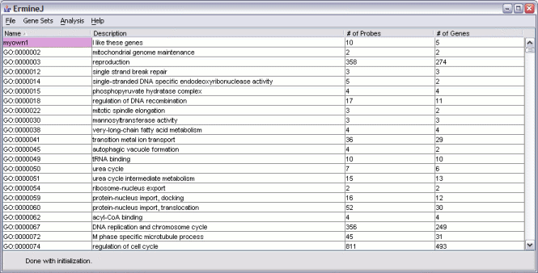
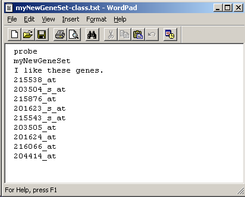
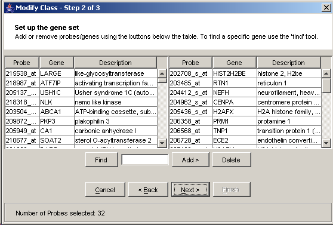

A gene set is any grouping of genes defined by criteria other than the data currently being analyzed. Our baseline gene sets are defined using Gene Ontology terms as applied in the publicly available sources listed on the GO web site.
You can import, define, or modify gene sets as you like. This page explains how.
Select "create new gene set" from the "gene set" menu. This gets you to the new gene set wizard.
You can import a file describing a gene set, or you can create one manually from the list of genes on the array you are using. You choose which to use by selecting "file" or "manual" in the first step of the new gene set wizard:

Select probes from the left panel and click "add" to move them to the right panel. Note that here we added one probe for the ABCA1 gene, but four probes were moved to the right. This is because there are four probes which assay ABCA1; all of them are added to the gene set automatically. Similarly you can delete probes from the right panel by using the 'delete' button.

To make it easier to build new gene sets, a 'find' function is provided. Here we searched for "cell cycle" and found 6 probes.

After adding the probes and genes to the gene set and hitting "next", you will be asked to enter a new identifier and description for the gene set you defined. When you hit finish, the information about this gene set is saved to disk and you are returned to the main panel.
After hitting 'finish', the new gene set is shown in color in the output panel. The gene set is also saved to disk for future use.


Here is the format of a gene set file, viewed in a text editor. The first line indicates the type of identifier in the file: either 'probe' or 'gene'. Here we are using probe identifiers. The second line is the name of the gene set, and the third is the description. Finally, there is a list of the probes in the class.

You can modify a pre-existing gene set by adding or removing genes. This is done using the "Modify gene set" wizard. This can be accessed either by right-clicking on the gene set in the Output Panel or by selecting the "modify" item from the Gene set menu.
If you use the "Gene set" menu, you will get a list of all the available gene sets. Select one by clicking on it. You can use the find function to help locate a specific set. After this step, the procedure is very similar to the "create new" gene set procedure explained above.

The next screen lists the available probes on the left, and the probes in the set on the right. Similar to the 'create new gene set' procedure shown above, you can add or remove probes.

Finally, you can provide your gene set with a new name. This is actually optional: if you don't provide a new name, the old gene set will simply be replaced.

As for new gene sets, the modified gene sets are shown on the main panel in a different color to indicate they were modified by the user.